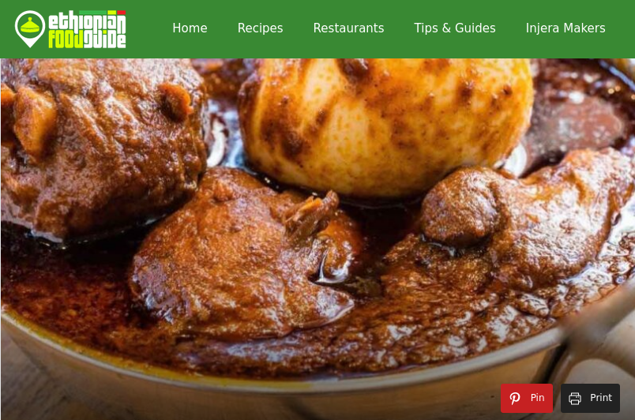

Doro Wot Recipe

Description
Doro Wot, which is the flagship dish of Ethiopia, is a stew of chicken and hard-boiled eggs. The key to an authentic and delicious Doro Wot is a quality Berbere spice blend, and a slow cooking time required for the dish to properly develop.
Ingridients
- 7 lbs skinned and cleaned chicken thighs and drumsticks
- 3 pre-boiled eggs
- 8 finely chopped onions
- 2 cups vegetable oil
- 2 cups water
- 5 tsp garlic powder
- 2 tsp ginger powder
- ½ cup berbere
- 2 tsp korerima
- ¼ cup paprika
- 2 tsp wot kimem (mekelesha)
- 2 tsp salt
Steps
- Begin by adding the garlic powder, ginger powder, onions, and vegetable oil to a large-sized pot; and let the mix simmer at low heat.
- Add paprika and berbere and continue to simmer at the same low heat for up to 20 min. Stir every now and then. Avoid the mix from sticking by adding a little water.
- Add the chicken thighs and drumsticks and simmer some more while also slowly adding the remainder of the water.
- Add the pre-boiled eggs, and finish simmering by adding salt, korerima, and wot kimem (mekelesha).
- Serve your Doro Wot hot.